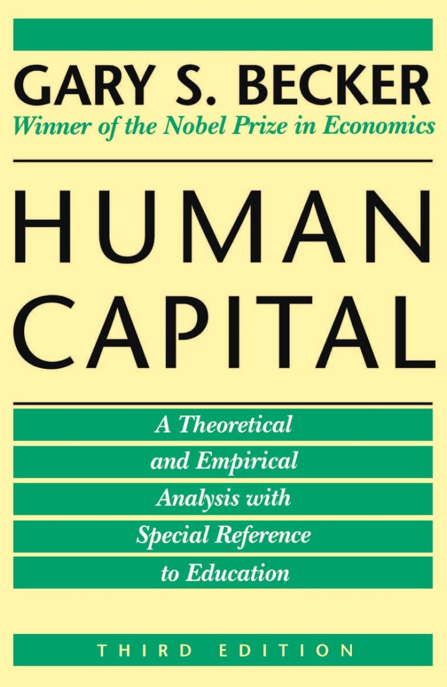
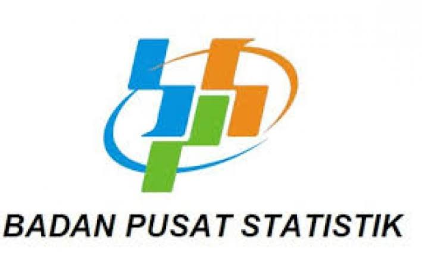

Isi datamu
Gaji, biaya hidup, target tabungan, plus data tambahan kayak cicilan dan kota. Datanya cuma diproses di browser-mu.
Karsa dibikin buat bantu kamu lihat akibatnya sendiri kalau ambil keputusan karier. Anggap ini catatan buat mikirin, bukan perintah.


Dari angka yang kamu isi sampai rekomendasi keluar, alurnya empat langkah ini. Geser ke samping kalau layarmu kecil.
Gaji, biaya hidup, target tabungan, plus data tambahan kayak cicilan dan kota. Datanya cuma diproses di browser-mu.
Sisa (gaji dikurangi biaya), cashflow (arus kas bulanan), dan status AMAN / WASPADA / RISIKO dihitung seketika dari Rumus 1–2 di bawah.
Gaji diproyeksikan naik tiap bulan, lalu runway (tumpukan sisa dana) dan ROI (untung dibanding modal) digambar di grafik (Rumus 6 di bawah).
Kartu rekomendasi keluar (Rumus 4–5 di bawah). Geser slider buat eksplor skenario kenaikan gaji lain.
Ini contoh yang sama dengan preview di homepage — sekarang kita bedah rumusnya satu-satu.
Biar rumusnya kebayang, ikuti Dinda — 23 tahun, fresh graduate di Jakarta, dapat tawaran gaji Rp5.000.000 dengan biaya hidup Rp3.000.000 dan target nabung Rp1.000.000 tanpa cicilan berjalan. Ia pertimbangkan sertifikasi Rp2.000.000 yang diproyeksi menaikkan gaji 10%, dengan kenaikan tahunan 8%. Datanya sama dengan contoh di section Rumus di bawah.
Contoh memakai data Dinda: gaji Rp5 juta, biaya Rp3 juta, target Rp1 juta, cicilan Rp0, investasi Rp2 juta, kenaikan 8%/tahun, slider 10%. Klik tiap kartu buat lihat penjelasan singkatnya.
Sisa = Gaji − Biaya Hidup − Cicilan
Rp5.000.000 − Rp3.000.000 − Rp0 (cicilan) = Rp2.000.000/bln
Basis alokasi 50/30/20; kalau sisa nol atau minus, basisnya pakai gaji.
Cashflow = Sisa − Target Tabungan
Rp2.000.000 − Rp1.000.000 = Rp1.000.000/bln
Minus berarti RISIKO, di bawah Rp1.000.000 berarti WASPADA, selebihnya AMAN.
Gaji Baru = Gaji × (1 + Slider%)
Rp5.000.000 × (1 + 10%) = Rp5.500.000, extra (tambahan gaji) Rp500.000/bln
Slider what-if cuma mengubah satu variabel ini; semua kartu lain ikut ngitung ulang.
BEP = Investasi ÷ Extra per Bulan
Rp2.000.000 ÷ Rp500.000 = 4 bulan (+3 bulan bila sertifikasi dulu)
Selalu dibulatkan ke atas; kalau extra-nya nol, ditampilkan >24 bulan.
Primer 50% · Sekunder 30% · Tersier 20%
Dari sisa Rp2.000.000 → Rp1.000.000 / Rp600.000 / Rp400.000
Aturan Elizabeth Warren: kebutuhan pokok, gaya hidup, tabungan.
Gajibulan-i = Gaji Baru × (1 + Kenaikan%/12)i
Bulan ke-1 ≈ Rp5.537.000 · Runway kumulatif ≈ Rp2,5 jt · ROI ≈ −Rp1,5 jt
Digambar sebagai grafik dalam juta rupiah supaya gampang dibaca.
Supaya ekspektasimu pas: ini yang modelnya tidak lakukan. Mengakui batasnya bagian dari kejujuran metode.
Istilah yang muncul di dashboard, dijelaskan satu kalimat.
Catatan Penting: Alat ini buat nambah pertimbangan, bukan buat nentuin. Semua keputusan karier dan finansial tetap di tangan kamu, 100%.
Angka-angkamu, dihitung dengan metode di atas — gratis, tanpa perlu akun.
Mulai Simulasi